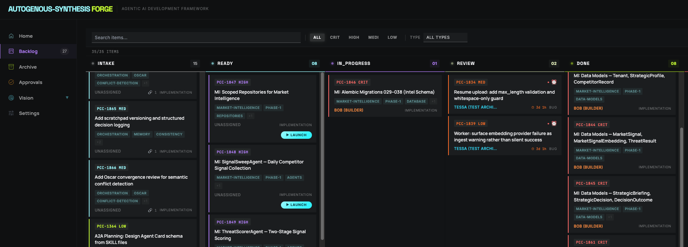

A harness engineering framework for agent-first software development. Not a wrapper around existing tools. A purpose-built development OS where specialized agents implement, test, and document work under a structured execution protocol — with shared context, machine-verifiable acceptance criteria, and low-friction handoffs that let one engineer drive multi-agent workflows without losing state.
"When something failed, the fix was almost never 'try harder.' The fix was: what capability is missing, and how do we make it legible and enforceable for the agent?"
— Ryan Lopopolo, "Harness engineering: leveraging Codex in an agent-first world," OpenAI · Feb 2026Fair question. Most "agent frameworks" are exactly that: a UI layer over a task list, where a human reads the ticket, constructs a prompt, pastes it into an AI tool, copies the result back, and manually updates a status field. The AI is accelerating individual steps. The process is still human-driven.
Forge is architecturally different. The backlog is a live state machine with transactional guarantees. Stewart promotes intake to ready and auto-generates agent-scoped prompts. Each agent registers its session, claims work, executes under a structured SOP, runs RED→GREEN→REFACTOR, and submits for review through a single HTTP API. The human stays at cross-ticket decision boundaries — picking what to dispatch, ratifying handoffs, owning architectural calls — while the framework removes the friction inside each ticket: shared scratchpads carry context across sessions, ISC tables make "done" binary, and structured reflection captures what the next agent needs.
The human's role is: set direction, define acceptance criteria, and review output. Everything between is Forge — protocol, lifecycle, context, and gates.
AI-assisted: You use AI tools inside your existing process. Efficiency improves 10–20%. The loop is still human-driven, the context is rebuilt every prompt, and "done" is subjective.
Forge / AI-first: You redesign the process around agents as the primary builders. The framework handles dispatch prep, context continuity, structured handoffs between specialists, and machine-verifiable quality gates. Humans provide direction and architectural judgment. The difference is multiplicative, not additive — and it compounds because the system, scratchpads, and memory get better over time.
Agents don't assist the developer — they are the primary builders. Forge is designed from the ground up to make agents' work legible, bounded, and enforceable. Every component — the session protocol, the backlog schema, the SOP library, the work packages — exists to maximize what agents can reliably do, with the human reserved for direction-setting and cross-ticket judgment.
A single engineer can run multiple agents in parallel across unrelated concerns simultaneously. Stewart auto-generates agent-scoped prompts at promotion time; the operator dispatches them across parallel sessions. Within a single ticket, structured phase boundaries let one specialist hand off to the next without context loss — proven on PCC-2327, a five-phase DB migration that ran Remy → Alex → Remy → Stewart → Remy without a restart. Work that would serialize a solo engineer runs concurrently.
All implementation work is test-driven: RED → GREEN → REFACTOR is a mechanical rule enforced by the verification gate, not a guideline. Machine-verifiable acceptance criteria (ISC format) make pass/fail binary. The evaluator auto-resolves routine reviews. No work reaches "done" without passing automated validation.
Agent sessions generate structured scratchpads that persist across context limits. The living memory system — agentic memory with digestive pipeline, auto-promotion gates, and decay — means agents start sessions knowing what the fleet has already learned. Knowledge compounds across every session, every agent, every project.
Every backlog item moves through five stages with automated transitions. Agents claim work, the system tracks conflicts, and the human sees a real-time view of what every agent is doing and why.

Every backlog item in the ready state includes a table of Ideal State Criteria — binary, pass/fail conditions with explicit verification methods. No "it should work" or subjective sign-offs.
| # | Criterion | Verified how | |---|-----------------------------------|----------------------| AC1 Migrations 029–038 applied cleanly alembic current == head AC2 All 6 new models importable pytest -k test_models AC3 Rollback to 028 succeeds alembic downgrade -1
All state changes go through a single HTTP API server. No UI required. Agents make REST calls; the dashboard reflects state in real time via WebSocket. The API has atomic writes, 10-retry exponential backoff, and file-lock conflict detection.
curl -X PATCH http://localhost:5176/api/backlog/PCC-1846 \ -H "Content-Type: application/json" \ -d '{ "status": "in_progress", "assignedAgent": "bob" }'
This is the loop every Forge ticket runs through. The orchestration is structured by the PDT (Project Definition Toolkit) and its dashboard, not by a single autonomous agent: tickets carry their own AC, prompt templates, and agent assignments; the dashboard auto-generates an agent-scoped prompt on status transitions; Launch and Relaunch buttons stage the prompt for one-click clipboard copy. PCC-2327 — a 5-phase DB migration that ran Remy → Alex (ADR) → Remy → Stewart → Remy — shipped through this loop without restarts or context loss. Autonomous fan-out — where a single orchestrator agent runs the whole loop unattended — is Phase 2, calendar-gated ~6 weeks out behind measured-data review of how often the operator actually wishes the system would take more action.
Every ticket runs the same six phases — from a planning agent's decomposition all the way to an automated review gate's auto-close. The dashboard owns dispatch and gating; specialists own execution; the operator clicks Launch or Relaunch.
A planning agent (Alex for architecture, Bea for product requirements) reads the goal and produces a structured plan. The plan is filed as one or more PDT tickets via the API — each with a scoped AC table, an agent assignment (Bob, Tessa, Sherry, Remy, etc.), and the prompt template appropriate to that specialist's SOP.
Stewart verifies AC quality, checks for collisions with other in-flight work, confirms the agent assignment, attaches the right prompt template, and promotes the ticket from intake to ready. Tickets in ready are dispatchable; tickets in intake are not. This step is autonomous — no operator action required.
The operator moves a ready ticket to in_progress in the PDT dashboard. The status transition triggers prompt generation: the dashboard composes an agent-scoped prompt from the ticket's AC, file references, prompt template, and constraints — and stages it for the Launch button. One click on Launch copies the prompt to the clipboard. The operator pastes it into a fresh Claude session.
Agent: bob Ticket: PCC-2327 — Migrate PDT to better-sqlite3 Context: [Files, prior scratchpad, related ADR] AC: ISC table — binary pass/fail rows Constraints: TDD required, do not touch migration 028 Lifecycle: /session bob PCC-2327
The agent registers its session via the /session lifecycle (POST /api/sessions), claims the ticket (PATCH backlog → in_progress), creates a scratchpad from template, executes under the relevant SOP and TDD protocol, runs verification, and submits for review (PATCH → review). Because the prompt staged by Launch already carries full context, the agent never has to ask "what's the goal" or "which files matter."
Submission to review triggers a multi-stage gate that runs without operator intervention: ESLint (TypeScript), Ruff (Python), 700+ Jest suites / 2,400+ test cases, Eval (machine-verifiable AC check), Quinn (code review SOP), Stewart's pre-commit gate, and Sentinel (security review where applicable). Every gate is binary and audit-logged.
Pass: the ticket auto-closes to done. The operator is notified but does not click anything. Fail: the ticket flips back to in_progress and a Relaunch button appears, staging a "fix it" prompt that names the failed gate (which ISC row, which lint rule, which test) and the specific correction needed. One click on Relaunch copies it to the clipboard. The operator pastes it into the existing agent session — work continues, no restart.
When a review gate fails, the answer is never "try rephrasing the prompt." The PDT dashboard composes a structured Relaunch prompt that names the failed gate (which ISC row, which lint rule, which test, which review note), states the specific correction needed, and re-attaches the original context. One click copies it to the clipboard; the operator pastes it into the same agent session to continue. This is structured error correction — a rule-based recovery loop with an ISC-anchored bar, not vibes — and it is what makes the framework converge instead of spin.
Forge doesn't have a single "AI assistant." It has a network of specialized agents, each with their own SKILL.md that defines triggers, guardrails, sub-skills, and output formats. Routing is automatic — the right agent activates based on context keywords, not manual selection.
Skills don't require manual selection. Keywords in context trigger the right agent automatically: "requirements" → Bea · "architecture" / "ADR" → Alex · "debug" / "error" → Doug · "test" / "coverage" → Tessa · "security" / "audit" → Sentinel · "review" → Quinn. Each SKILL.md defines its trigger set, output format, and what it must not do — the three components that make routing reliable rather than hopeful.
Governance in Forge is automation-first, not approval-first. Requiring human sign-off on every agent action would create the exact bottleneck Forge is designed to eliminate. Instead, the system evaluates completed work automatically against objective criteria — and only escalates when it genuinely can't make the call.
When an agent submits work, Eval runs immediately: acceptance criteria (ISC table), linting, regression tests. All checks are binary pass/fail — no subjective scoring. The full audit trail is persisted in SQLite and visible in the dashboard.
If all checks pass: the ticket is automatically marked done and the human is notified. If any check fails: the ticket is routed back to the responsible agent with the failure details. No human in the loop for either outcome.
When Eval can't determine pass/fail with confidence — genuinely ambiguous architectural decisions, novel failure patterns, out-of-bounds behavior — it escalates to the human with a structured evidence package. Human judgment is reserved for decisions that actually require it.
Global guardrails in .agent-data/guardrails/global.md define mechanical rules: never write to .env*, never run rm -rf, never push --force to main, never commit secrets. These aren't reminders. They're validated by automated test suites that run on every change. An agent that violates a guardrail rule fails the verification gate.
Three architectural constraints govern every component of Forge: cross-platform (Windows, Mac, Linux), IDE-agnostic (Cursor, VS Code, CLI, any tool), and model-agnostic (Claude, GPT, Gemini, future models). These are not design preferences — they are enforced by architecture boundary tests.
When an agent submits work for review, the Eval agent runs independently against the objective acceptance criteria. For work that clearly meets every AC row with test evidence: Eval auto-approves. For ambiguous cases: Eval escalates to human with a structured evidence package — what passed, what's uncertain, why it's being escalated. This reduces review load by 80%+ without sacrificing oversight.
The goal is not to remove humans from decisions — it's to ensure humans only make decisions that genuinely require judgment. Routine completions don't need human attention. Architectural risks do.
Every agent session generates a structured scratchpad at .agent-data/scratchpads/active/. The scratchpad tracks: the decomposition plan, the status of each sub-task, the Task Brief sent to each sub-agent, what the sub-agent returned, whether it met the AC, and the accumulating Synthesis. When an agent hits a context limit, it writes its state and stops cleanly. The next invocation reads the scratchpad, identifies the last completed sub-task, and resumes from there. No restart from zero. No duplicate work.
## Decomposition Plan | # | Sub-task | Agent | Status | | 1 | Implement model | Bob | ✅ Done | | 2 | Write tests | Tessa | 🔨 WIP | | 3 | Generate docs | Sherry| ⏳ Wait | ## Sub-task 1: Result [What Bob returned] [AC evaluation: met ✅ / failed ❌] ## Synthesis [Accumulating unified deliverable]
When Stewart promotes a backlog item to ready, Forge auto-generates a Work Package — a curated handoff document that contains everything an agent needs to start immediately. Not a pointer to the ticket. A self-contained brief with the problem statement, acceptance criteria, file references, and quick-start commands. No "can you explain this?" back-and-forth.
Problem Statement: Clear description of what and why Acceptance Criteria: Binary ISC table — pass/fail only Files to Modify: Exact paths, what to change Quick-Start: Commands to verify env before writing Starter Context: Relevant code excerpts, not full files Constraints: What not to touch, hard limits
Work packages are the link between "human writes a ticket" and "agent starts work." They are the automated prompt engineering layer — structured context that makes agent output reliable rather than hopeful.
Every agent follows a mandatory sequence. Not as a recommendation — as a protocol enforced by the framework and audited by the session API.
# 1. Register — collision detection, session index curl -X POST localhost:5176/api/sessions -d '{"sessionId":"bob-pcc-1846-2026-04-13","agentName":"bob"}' # 2. Load context — scratchpad auto-created from template if new curl localhost:5176/api/sessions/bob-pcc-1846-2026-04-13/context?backlogId=PCC-1846 # 3. Claim — prevents double-assignment, marks in_progress curl -X PATCH localhost:5176/api/backlog/PCC-1846 -d '{"status":"in_progress","assignedAgent":"bob"}' # ... work happens ... scratchpad updated every 3-5 actions ... # 4. Submit — triggers Eval; never ask the human first curl -X PATCH localhost:5176/api/backlog/PCC-1846 -d '{"status":"review"}' # 5. End — session archived, reflection written curl -X DELETE localhost:5176/api/sessions/bob-pcc-1846-2026-04-13
All implementation work in Forge is test-driven. This is not a coding convention. It is a mechanical constraint enforced by the verification gate. Any PR or session submission that lacks a RED→GREEN→REFACTOR trace fails automatically before it reaches human review.
Tessa generates failing tests before Bob writes a line of implementation. Bob implements only enough to pass. Remy reviews the clean implementation for refactoring opportunities. The cycle is the process — not something bolted onto it afterwards.
npx jest \ --config jest.config.verification.js \ --runInBand \ --bail \ --passWithNoTests \ --forceExit # Covers: core API unit tests, hook validation, # steward guardrails, approval queue, skill triggers, # architecture boundary checks — 150+ suites
Stub implementations (throw new Error('Not implemented'), empty returns, TODO placeholders) are rejected by the verification gate in production files. If full implementation isn't possible in scope, a new backlog item is created — not a placeholder left in code.
Forge generates structured observability artifacts automatically. Not after-the-fact documentation — live signals produced as work happens.
Automated daily check reports capture backlog state, session activity, agent throughput, and test coverage metrics. Structured JSON + Markdown. Available at .agent-data/reports/daily-check-[date].json.
Every agent action is logged to .agent-data/events/event-log.yaml — which agent, which ticket, what action, timestamp. Full audit trail of everything the agent network has done.
Every review decision generates a structured eval result: what was checked, which AC rows passed, what evidence was cited, whether the decision was auto-resolved or escalated and why.
Completed scratchpads are archived to .agent-data/scratchpads/archive/YYYY-MM/. Every decision made during execution — what sub-tasks were decomposed, which sub-agents were spawned, what they returned — is preserved. Agent decisions are auditable, not ephemeral.
| Task Orchestration | Human reads ticket, constructs prompt, pastes into AI tool, copies output back. Human is the message bus. | Stewart auto-generates agent-scoped prompts with binary AC. The operator dispatches across parallel sessions; structured handoff signatures let specialists pick up mid-ticket without restart. Eval runs at submission against the ISC table. |
| State Management | Drag-and-drop UI. No transactional guarantees. No conflict detection. | HTTP API with atomic writes, 10-retry exponential backoff, file-lock conflict detection before agent dispatch. All transitions are API calls with audit trail. |
| Work Handoff | Agent reads the raw ticket. Asks clarifying questions. Needs more context. | Stewart promotes item and auto-generates a Work Package: problem statement, binary AC table, file references, quick-start commands. Agent starts immediately. |
| Multi-Agent Coordination | No coordination. Two agents can edit the same file simultaneously. Manual management. | GET /api/locks detects which files are being modified before dispatching implementation agents. Serializes or escalates based on dependencies. |
| Quality Gates | Subjective review. "Does this look right?" Human checks everything. | ISC acceptance criteria (binary pass/fail). Verification gate runs 150+ test suites. Eval auto-approves routine completions. Human reviews only genuinely ambiguous decisions. |
| Context Continuity | Context limit hit → restart from zero. Repeat prior work. Lose progress. | Structured scratchpads persist full execution state. Resume reads scratchpad, identifies last completed sub-task, continues from next. Zero restart cost. |
| Error Correction | Sub-agent returns bad output → human re-prompts manually with ad-hoc context. | The protocol defines a structured revision loop on AC failure: cite the failed ISC row, regenerate the Task Brief with the targeted correction, re-run on a fresh session. Max 2 loops before escalation. |
| Test-Driven Development | Optional. Depends on the individual prompt. Frequently skipped. | Mechanically enforced. Tessa generates failing tests first. Bob implements to pass. Verification gate rejects submissions without RED-GREEN evidence. |
| Approval Trail | No record. Agent writes wherever it wants. No oversight. | Every file write, delete, and command routes through approval queue. SQLite audit log with timestamps. Dashboard shows all pending requests. Agents cannot act without approval. |
| Skill Routing | Human decides which AI tool to use for each task. Manual prompt-engineering every time. | 12 specialist agents with keyword-triggered SKILL.md activation. Stewart assigns the right specialist when promoting a ticket to ready; the dashboard auto-generates an agent-scoped prompt at the ready→in-progress transition; one click on Launch copies it to the clipboard. No manual prompt engineering. |
Forge doesn't make you a faster developer. It makes you an architect of systems that develop. The shift is categorical, not incremental.
A solo engineer works sequentially. One task at a time. Context switches are expensive. Writing tests is deferred. Documentation follows (never). State lives in the engineer's head. When they're not working, nothing is.
Multiple parallel agent sessions execute concurrently across unrelated concerns. Tests are generated before implementation. Documentation is produced alongside code. State is persistent and auditable. The system works whether or not the engineer is at the keyboard.
The key capability Forge creates isn't "AI writes my code." It's institutional execution capacity — the ability to run more work, in parallel, with higher confidence, than any individual developer could sustain. And to get measurably better at it over time, because the memory system compounds what the agent network learns.
Forge is not a collection of prompts and a kanban board. It is a purpose-built engineering system designed to make agent-first development reliable, auditable, and continuously improving. Every component — the session protocol, the approval queue, the work packages, the Launch / Relaunch dispatch loop, the TDD enforcement, the scratchpad continuity — exists to answer one question: what capability is missing, and how do we make it legible to the agent?